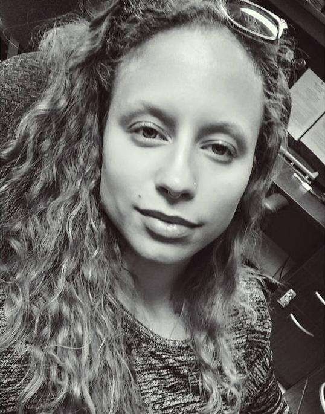
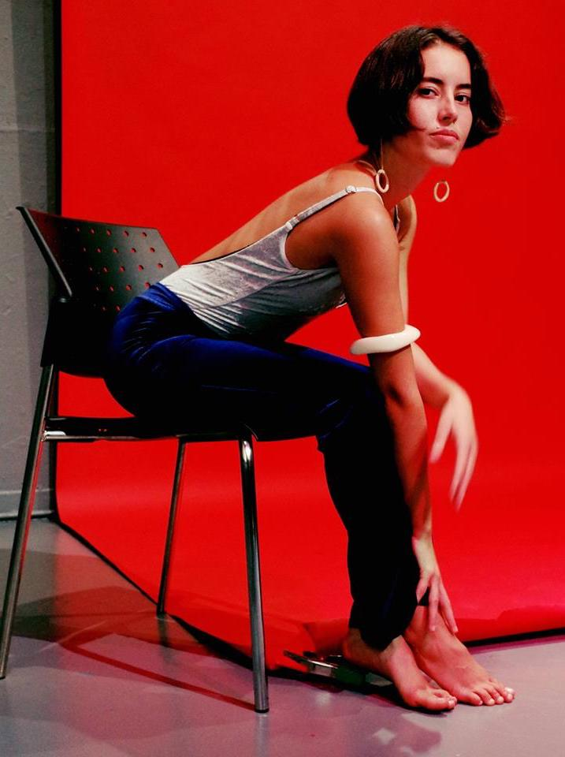

home | the pod | about
Sahara Grim:

- ¼ Indian, ¼ Japanese, ½ white
- Grew up in Clairemont, CA
- Episode focuses on Racial Ambiguity
Stephanie Pilon:
- ½ black, ½ white
- Grew up in Ontario, Canada
- Episode focuses on Imposter Syndrome
Ivy Barwicke:
- ½ Filipino, ½ white
- Grew up in Point Loma, CA
- Episode focuses on Fetishization, Racism and Activism in Asian American Communities
Amayi Morales:
- ¼ Cuban, ¼ Nicaraguan, ¼ white, ¼ Apache
- Grew up in San Diego, CA
- Episode focuses on multiculturalism and art